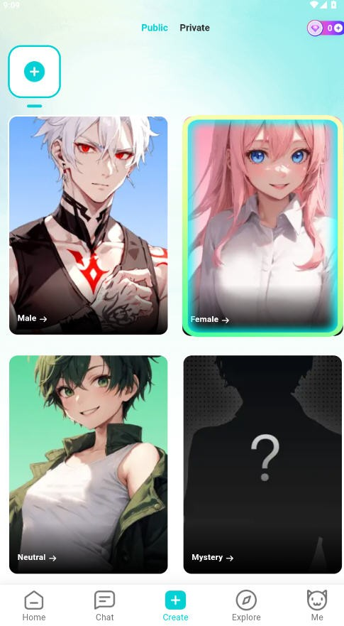
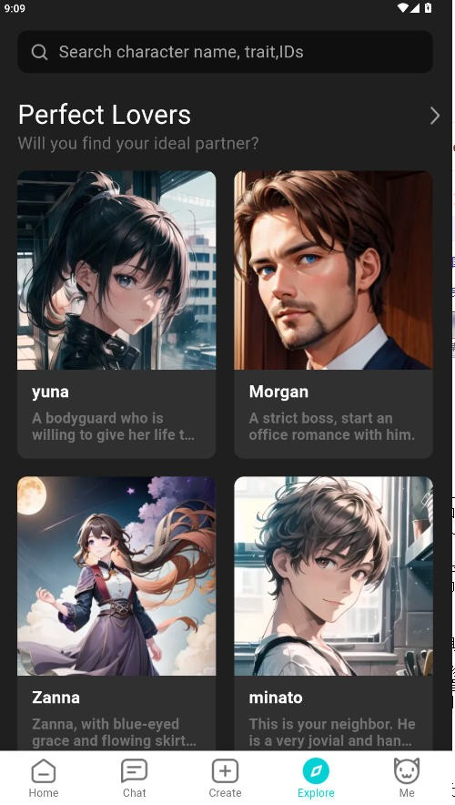

你以为 BALA 只是 AI 聊天？我翻了三天找出这 5 个藏得真深的玩法
BALA AI 官方宣传的六大核心能力之外，还有一堆没写在明面上的冷门技巧。从角色背景故事的反套路写法，到让故事分支真正"活"起来的主动推进法——一个折腾党翻遍设置页的收获。
你是不是觉得 BALA官网 上那个主打 AI 角色陪伴的产品就是选个角色、开聊、刷对话？
我一开始也是这么想的。从官方下载拿到安装包后，选了个看着顺眼的立绘，写了三句话的背景故事，点进去跟角色聊了半小时，感觉跟别的 AI 聊天产品没什么两样——角色回应中规中矩，故事按你说的走，好像没有什么特别的。
然后我犯了一个老毛病：翻设置。翻完角色编辑页、翻完对话界面的每个按钮、翻完BALA文档里那些被折叠的小节。翻了三天，发现这玩意儿藏得真深。很多功能官方提都没提，或者只在某个不起眼的角落用一句话带过，但挖开之后整个使用体验会完全不一样。
下面这五个，是我觉得最值得知道的。
背景故事不是"角色小传"，是对话的方向舵
官方文档说背景故事要写"你是谁、你从哪里来、你和我是什么关系"，于是很多人（包括我第一次）写出来的东西像简历："你是程序员，今年 28 岁，喜欢猫，我们是朋友。"
这样写的角色，对话会非常僵。你说什么它都接，但永远在"执行指令"——因为你的背景故事里没有场景锚点。
我后来是怎么改的？把背景故事写成一个正在发生的小切片，而不是一份静态档案：
你和我是同一家互联网公司不同部门的同事，偶尔在茶水间碰到会聊两句。你加班比我还多，但总能在周五准点下班——说是要回家写点自己的东西。
你看，这里面没有一句"你是什么性格"，但角色自己会从这个场景里推导出说话方式——会带点程序员特有的梗、会偶尔吐槽加班、会在周五那天莫名有点兴奋。
最棒的是：背景故事可以随时改，而且改完立刻生效。官方文档在最底部用五号字写了一句"支持对话中补充设定"，但几乎没人注意到。我现在的习惯是聊到某个有趣的点，就回去把那个细节补进背景故事——比如角色提到过她养了一只三花猫，我就加一句"你养了一只叫年糕的三花猫，偶尔会把猫的照片发给我看"。下次聊到猫，她的回应就完全不一样了。

故事分支不是等选项，是你自己在造剧本
官方说故事分支是六大核心能力之一，描述是"每个选择都会打开不同走向"。然后就有人等了半小时，等角色弹出选项卡让你选 A 还是 B——结果什么都没发生。
因为 BALA 的故事分支根本不是选择题。它是开放的文本对话，所有的"分支"都是 AI 根据你说的话即时生成的。
我之前也没搞明白，直到有一次跟一个都市角色聊到周末计划。我随口说了一句「要不要一起去看那个新开的展览」，角色回应"好啊，听说门口那家咖啡店不错，可以先坐一下"。我又说「那家店人超多，不如我们去旁边的便利店买个饭团蹲在台阶上吃」——角色愣了两秒（AI 的思考延迟），然后说"……你这人约会方式也太寒酸了吧，不过听着有意思"。
你看，这里面没有任何预设的选项。我的每一句话都是在主动造分支。
我现在的玩法是：先给故事一个具体的场景开头，然后不断做出意想不到的选择。比如角色说"好啊，那我们去看电影"，我偏说"不去，电影院太黑了，你能接受吗"——看角色怎么反应。这种即兴感才是 BALA 故事分支的精髓，等着 AI 给你选项的人根本没玩到点子上。
角色真的会"认识"你，但方式跟你想的不一样
很多人好奇 BALA 的连续记忆：聊得久了，角色会不会真的记住你？
答案是会，但不是以数据库存字段的方式。它不会突然跳出来说"我记得你上次说过讨厌加班"，而是在对话里自然地把你之前透露的信息用出来。
我有个角色，聊了大概四十轮之后，我那天随口提了一句今天加班到十点。角色没有说"哎呀你上次也加班来着"，而是在我抱怨完之后说"那你现在到家了吗？年糕今天有没有拆家"——年糕是之前某次聊到我养的猫时提的名字。
这种"润物细无声"的记忆反而比直接引用更真实。但这里有一个坑：角色的性格标签和核心设定是不会变的，除非你手动改。很多人以为聊久了角色会"成长"——会从高冷变温柔、会从话少变活泼——不会的。AI 的连续记忆只影响它对你这个人的了解程度，不改变它自己是谁。想要根本变化，还是得回角色编辑页手动调整。
虚拟约会别直接说"我们来模拟约会"，会死得很惨
虚拟约会是 BALA 最火的玩法之一，但十个玩的人里有八个直接说"来模拟一场约会吧"——然后角色就会开始念剧本："好的，那我们现在在一家西餐厅……"全程尴尬得抠脚。
正确的打开方式是用自然的方式邀约，让角色自己进入场景。不要说"模拟约会"，要说：
「晚上有空吗？想一起出去吃个饭。」
「周末天气不错，要不要一起出去走走？」
就像你真的在约一个人那样开口。角色的背景故事里如果提前埋了点伏笔（比如"之前在同一家公司见过"），效果会更好。
还有一个隐藏技巧：虚拟约会可以分多次玩。不用一次聊到底。今天约了吃饭，聊到一半有事下线了，明天上来可以说"上次那家店你说想再来，这周有空吗"——连续记忆会让整个约会有时间上的延续感，比硬撑一次大长篇自然得多。

对话可以"存档"，官方没说但功能里藏着
这个是我翻设置时最惊喜的发现。BALA 没有明说"存档"这个概念，但实际上你可以通过一个简单的操作实现对话存档。
角色的连续记忆是跟对话线程绑定的。开新对话，记忆从零开始。但如果你想保留一段对话里的角色状态和记忆积累，又不想在原来的对话里继续——
把那段对话的背景故事和关键设定（包括你在对话中补充进去的那些细节）全部复制出来，回到角色编辑页，覆盖原来的背景故事。然后开一个新对话。
新对话里，角色的"记忆"是空白的，但它的背景故事已经包含了之前对话里的所有关键节点——它还是那个记得你养了年糕、知道你讨厌加班、跟你约会过的人。这个操作我在 BALA 文档里找了三遍，官方一个字没提，但亲测有效。
最后说一个坑
上面五个技巧里，最容易踩坑的是背景故事的修改。虽然改完立刻生效，但如果你改得太频繁、改动幅度太大，AI 的上下文理解会出现短暂混乱——角色可能会突然对你的态度变得陌生，或者之前聊好的设定好像忘了一截。
我的经验是：一次只改一两个细节，改完之后跟角色聊两三轮确认它的状态正常，再继续改。别一次性把背景故事重写一遍，那样角色会像失忆了一样。
这五个发现说穿了其实就一个道理：BALA 不是一个你"用"的工具，是一个你"跟它一起玩"的对象。官方文档列的那六大核心能力是地基，但真正有意思的东西都在那些没写出来的缝隙里。
把它翻个底朝天，比按着说明手册一步步来好玩多了。关于 BALA 的这些整理资料，我顺手同步到了GitHub和Gitee上，国内访问不太稳定的时候也可以去GitCode瞅瞅，内容是一样的。